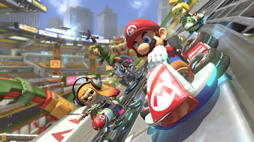

Mario Kart Hub
Team Composition: Strategically choose team members based on their individual strengths and preferences. Consider balancing between players proficient in offense (aggressive item usage, speed optimization) and defense (item management, blocking opponents). Diversify character and vehicle selections to cover a range of playstyles and track specialties. Communication and Coordination: Establish clear communication channels within your team, whether it's through voice chat, text chat, or predefined signals and callouts. Coordinate item usage and defensive maneuvers to maximize team efficiency and minimize vulnerabilities. Assign roles within the team, such as front-runners responsible for leading the pack, midfielders supporting and disrupting opponents, and backliners providing defensive support and item protection. Item Management: Coordinate item usage to maintain control over the race and disrupt opponents' progress. Use items strategically to protect teammates, hinder rival racers, and secure advantageous positions. Communicate item pickups and availability to ensure efficient distribution and utilization of resources across the team. Anticipate enemy item threats and coordinate defensive measures to minimize their impact, such as using defensive items like shells and bananas to block incoming attacks. Drafting and Slipstreaming: Utilize drafting and slipstreaming mechanics to gain speed and conserve resources, especially on straightaways and long stretches of track. Coordinate drafting chains within your team to boost overall speed and propel each other forward, maintaining a cohesive group formation whenever possible. Positioning and Blocking: Strategically position team members to cover multiple racing lines and create obstacles for opposing teams. Coordinate blocking maneuvers to protect leading teammates from incoming attacks and maintain control over key positions on the track. Adapt positioning dynamically based on race conditions, track layout, and opponent movements to maintain strategic flexibility and adaptability. Adaptability and Resilience: Remain flexible and adaptable to changing race dynamics, including unexpected item drops, track hazards, and rival strategies. Develop contingency plans and backup strategies to mitigate setbacks and recover from unfavorable situations. Foster a resilient team mindset focused on continuous improvement, adaptation, and teamwork, regardless of race outcomes or challenges faced.